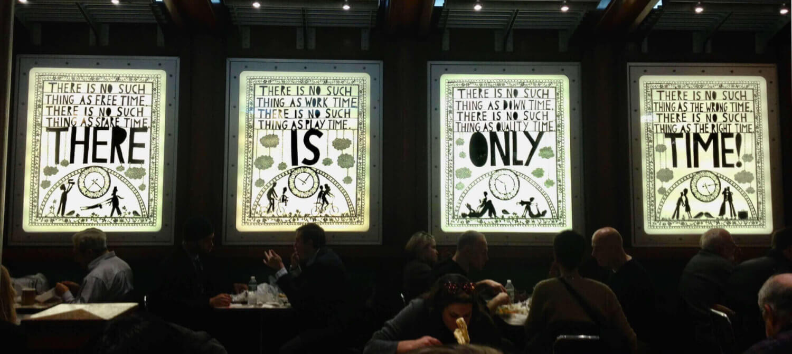
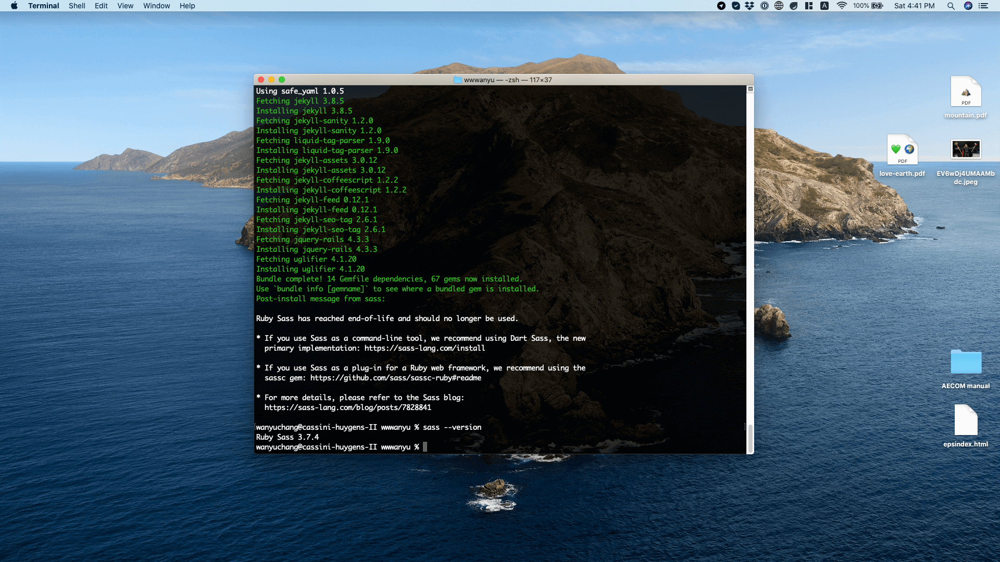
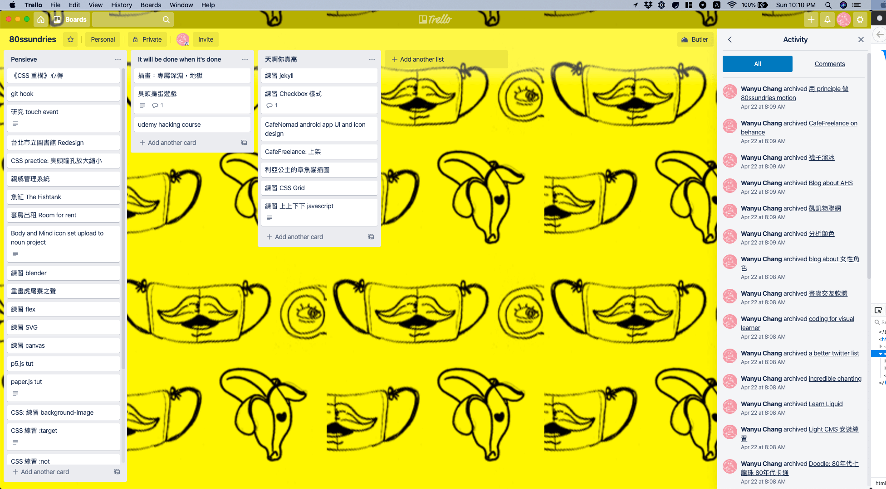
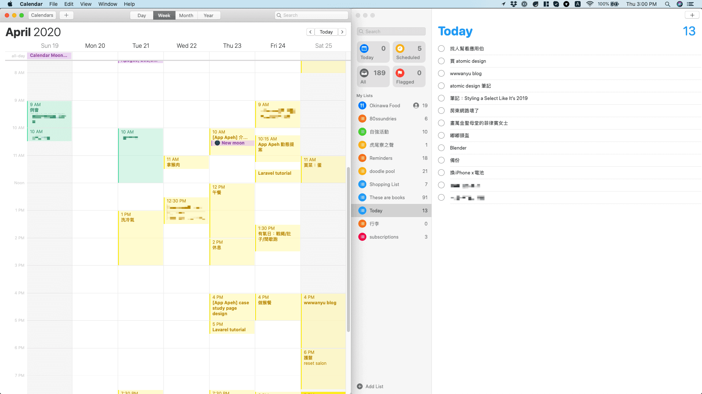
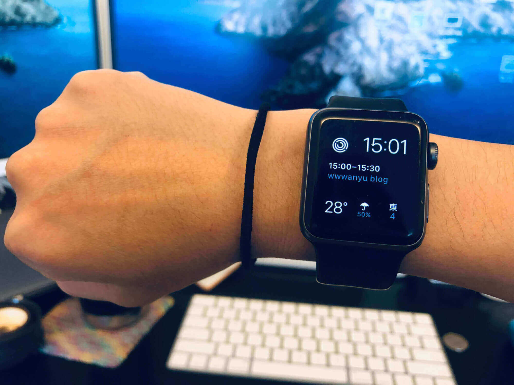

There is only time
中國武漢肺炎讓人類世界停擺，驚覺一年也很快要就過半了，嚇得我趕快來抓住青春尾巴！
我的履歷網站距離上次更新竟然過了兩年，拍拍灰塵來看看，編譯 SCSS 的套件已經不支援很久了
想要開一個部落格專門記錄我對 UI 跟視覺設計的觀察與心得，應該有幾年了吧，拖延症真的很可怕！
一直想試著管理自己的時間，例如這個 4 年前開的 Trello 紀錄的最後日期也是停在 2 年前
中途跟朋友試用過 Asana，原本想熱血的來翻轉世界吧！結果 … 也是陷入昏迷
管理時間失敗難道只是因為 …
我就爛嗎？🤣
要怎麼管理時間？直覺想到的方式是：
- 把想做的事情寫下來
- 照著這個清單一個一個去做
- 人生從此一帆風順！
雖然每換一個工具可以靠著三分鐘熱度完成一些小目標，但無法持續的挫折感還是很重
直到聽了頂樓加蓋 podcast Ep 5: 時の流れに身をまかせ、時間の管理 獲得了重大的啟發：
與其管理時間，更應該管理動力
近期只用 mac 內建的 Reminders，終於感覺比以前好一點
期待自己會按照自己排的時間按表操課，日複一日，任何目標都能達成，這真是不切實際的妄想。重點在於進入專心的狀態，能得到專注做事情的成果，比起紀錄到花了多少時間重要。
還有最近真的很喜歡我的 Apple Watch 錶面：
Activity、時間、行事曆、氣溫、降雨率跟風向風速，抬起手腕就知道等一下有沒有要做的重要的事。
